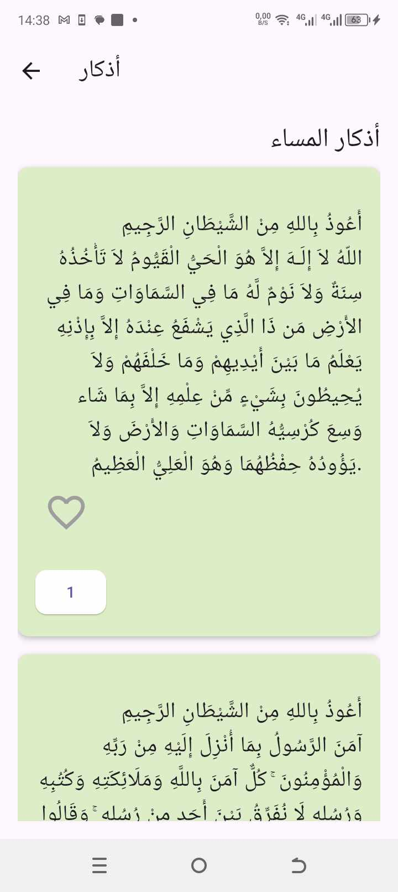
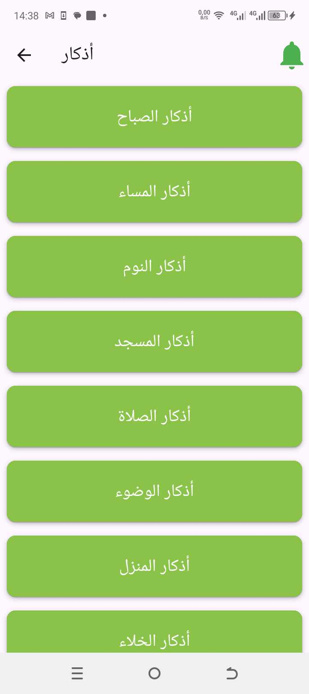
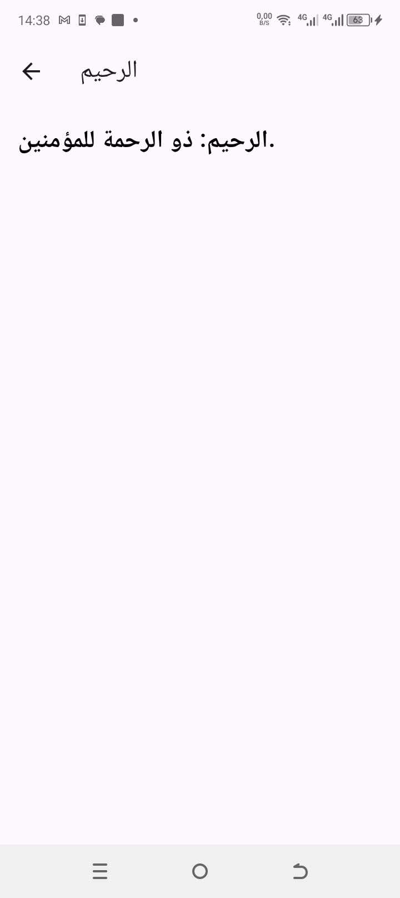
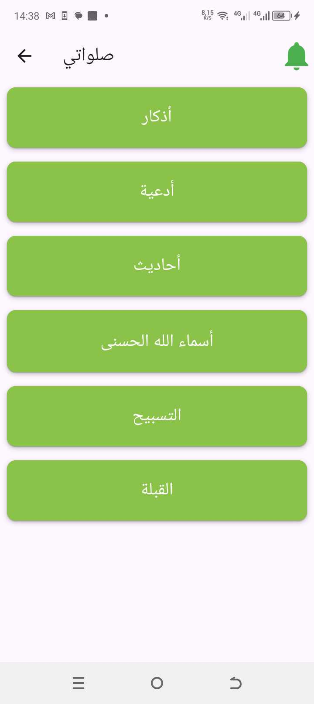
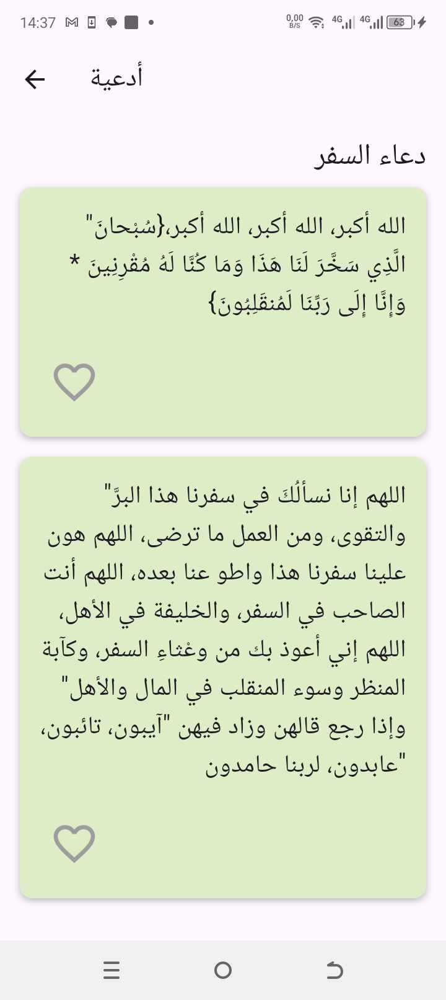
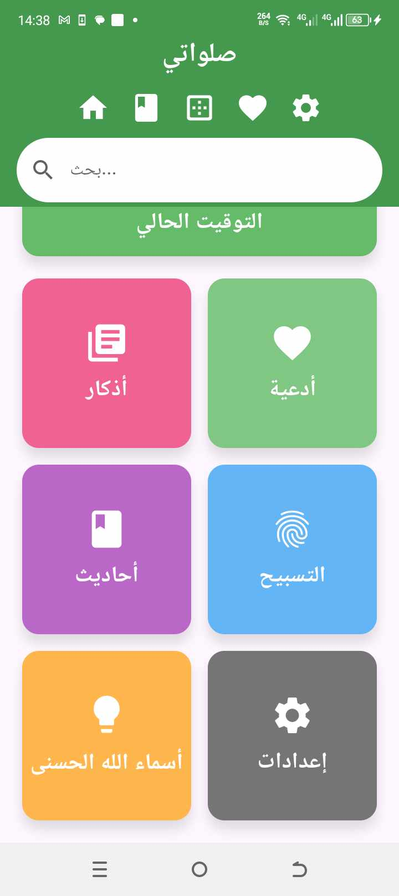
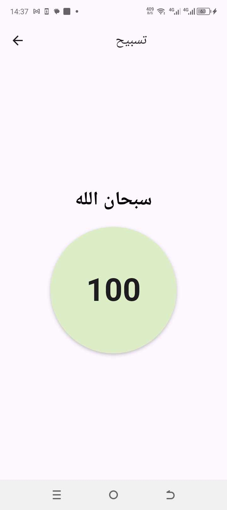
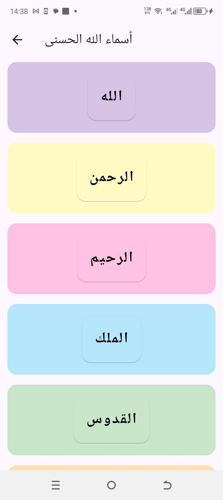

Flutter Project: Création application Salaweti
Introduction
Ce projet a été développé en utilisant Flutter pour créer une application mobile destinée à faciliter la gestion et le suivi des prières quotidiennes. L'application Salaweti permet aux utilisateurs de gérer facilement leurs prières en enregistrant les heures, en suivant leur régularité et en offrant des rappels personnalisés. Le projet vise à soutenir les utilisateurs dans leur pratique spirituelle quotidienne et à améliorer leur organisation personnelle.
Exemples de mon Travail








Fonctionnalités Clés
- Interface utilisateur réactive et intuitive.
- Compatibilité multiplateforme (iOS et Android).
- Notifications push pour rappeler aux utilisateurs de suivre leurs habitudes.
- Intégration d'API pour des données en temps réel.
- Options de personnalisation pour une expérience utilisateur améliorée.
Technologies Utilisées
Les technologies suivantes ont été employées dans ce projet :
- Flutter pour le développement de l'application
- Dart pour la programmation
- SQLite pour la gestion des utilisateurs et des données
- API REST pour l'intégration de services externes